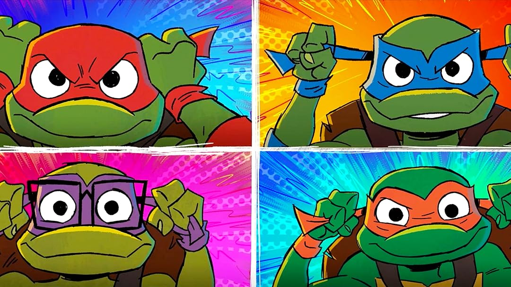
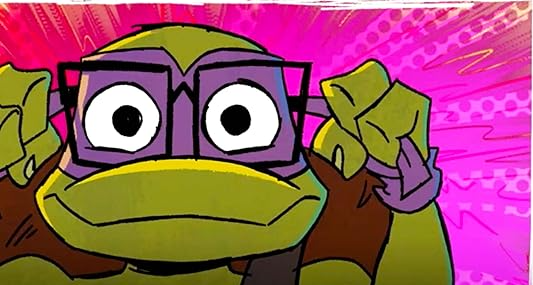

DOCKER MASTERS
Historia de nuestro Equipo
Surgimos como el Equipo E1 durante el primer laboratorio de la asignatura. Tras dominar el desarrollo web básico, hemos evolucionado hacia la arquitectura de contenedores para optimizar el despliegue mediante Nginx y Docker.
Nuestras Fortalezas
- Desarrollo de interfaces web con HTML5 y CSS3.
- Implementación de servidores web ligeros con Nginx Alpine.
- Gestión y orquestación básica de contenedores.
El Equipo en Acción

Integrantes
Haz clic en el nombre para ver el portafolio personal:

CAMPOS CARVAJAL MATÍAS

DEL CASTILLO MIRA JULIAN

FLÁNDEZ LAWRENCE BENJAMIN
Contacto
Para contactarse con el jefe de grupo: vyissim@correo.uss.cl